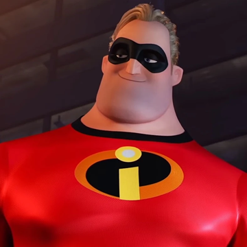
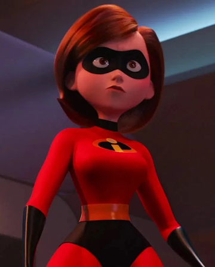
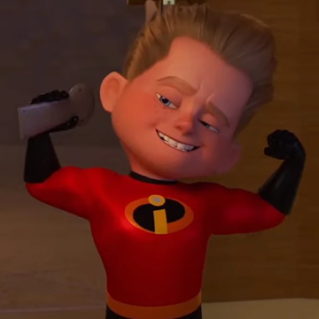

Bob Parr
He is the father and possesses superhuman strength, stamina, and durability.

Helen Parr
She is the mother and wife of Bob Parr. Helen can stretch any part of her body up to 300 feet and can be 1 mm thin.

Violet Parr
The oldest in the family. Her superpowers allow her to turn instantly invisible, and to generate spherical force fields to protect herself and also to levitate extremely heavy objects.

Dash Parr
He is the middle child and possesses the superhuman capacity to move at great speeds. This power enables him to run faster than any conventional human beings are able to, and even to run over water without submerging.

Jack Jack Parr
The youngest member of the family. He has many powers, including shape-shifting, laser vision, and teleportation.